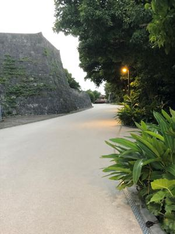

うるがいの話 ある日
最新: 投資（体育の日）うるがいとは 前提知識です
カニの画像をクリックすると『うるがいの話』サイトを表示します|
|
【うるがいの話】 うるがい(ｳﾙｶﾞｲ urugai)とは、『もずくがに』の名前でとても大きくなります。 |
|---|---|
|
|
【Got cat カミマヤーの話】 たながー（ﾀﾅｶﾞｰtanagaa）とは手長えびのことで、何種類かあり大きいのは車 エビぐらいになります。 |

|
【ぶながぁの話】 ぶながー(bunagaa)とは、赤い髪の毛、赤い身体、そして身長は１ｍ２０ｃｍ ぐらい、川の蟹を食べているの目撃された。場所は沖縄県国頭郡大宜味村のと ある村僕の隣近所に住んでいる爺さんから、聞いた話です。 |
|
|
【ギーマの話】 ギーマ(giima)とは、山原の里山に咲くスズランに似た、 花を付けます。実は食べられます、 気が付くと口の周りが紫になっています。 |
2021年10月10日 (日）投資（体育の日）
16:31

その昔、１０月１０日は体育の日で、かつ、休日で運動会だった。昨日、無職
のこどもが家に来た。そして、Googleアンケートモニターでこずかい稼ぎをし
ていたら、ビットコインが貰えるようになった。この前４百円だったのにいつ
の間にか５百円になっていた。と、ビットコインについていろいろ話していた
ん、投資しようかなと。奇遇なことに、この前市立図書館へ予約した本を受け
取りに行くと、受付の前にこれ借りてもいいスよと『とにかく死なないための
「しょぼい投資」の話 お金がなくても生き抜こう』があったのでついでに借
りて読んだばかりである。本の中身ではお金が貯まる話ではなかったが・・・
財産分与のため貯金を使い果たしたコドモが、昨日車でのなかで副業を考えて
いるとつぶやいていた。早速、図書館からビットコインの投資に関係する本を
予約することにした。と、ギターコードのユチューブの動画を見ているとコー
ドCaug(ment)のaugmentの英単語の説明で
「彼は収入アップのために副業を始めた」みたいな訳で、
僕がこないだ見た英単語でもそんなのがあったんですよ。
「He took a second job to augment his incame.」
みたいなそんなのがあったんですけれども・・・
なんと、もろもろが繋がっている。『【お小遣い稼ぎアプリ＆サイト】月間収
入ベスト８を発表！一番稼げるおすすめは？』というサイトでこどもの話を確
認していると、『ぴたコイン』という無料のお小遣い稼ぎアプリがヤバイ！
翌日のビットコイン価格が上がるか下がるか予想するだけ
当たればビットコインがもらえる
広告を閲覧してビットコインを貯めることも可能
『ぴたコイン』のサイトをみてみた、どうやって経営しているのか全く見えな
い、ヤバイ！どうみても危ない（案の定、問題ありと評価されていた）。こど
もの話によると、以前の職場では、NISA（少額投資非課税制度）を利用して
いたと。でも、なかには２０万投資してくれたら・というヤバイ話もあったよ
うで、その人たちはNISAのことをげちょんげちょんに言っていたと。一応こ
どもは大丈夫だと思うが、あとで確認しよう。